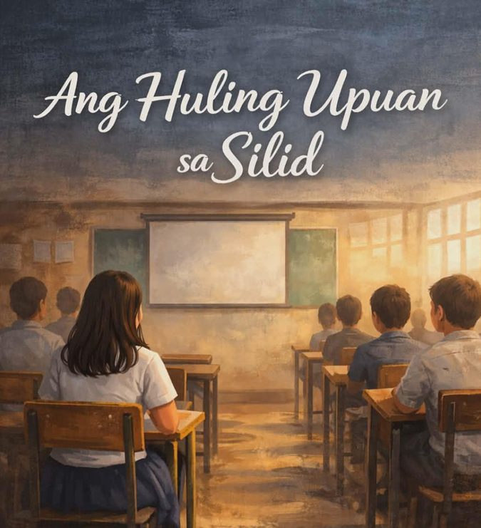
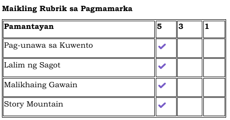

Asignatura: Filipino
Baitang: Senior High School
Paksa: Tekstong Naratibo
Pamagat: Ang Huling Upuan sa Silid
Estratehiya: Story Mountain
Panuto: Sagutin nang buo at simple ang tanong.
Panuto: Bigyang-kahulugan ang mga salita at gamitin sa pangungusap.
Talasalitaan (5 minuto)
Bigyan ng kahulugan batay sa konteksto:
Basahin ang maikling kwento at sagutin ang mga tanong at gawain sa ibaba.

Ang Huling Upuan sa Silid
Palaging sa huling upuan nakaupo si Andrea. Doon siya ligtas—malayo sa mata ng guro, malayo sa tanong, malayo sa pagkakamali. Tahimik siyang mag-aaral; maraming iniisip, kakaunti ang sinasabi.
Isang araw, may ipinagawang presentasyon ang guro. Kailangan itong ipagtanggol sa harap ng buong klase. Walang makakatanggi. Walang pwedeng magtago.
Naghanda si Andrea. Inaral niya ang paksa, ngunit mas inaral niya ang sarili niyang takot. Sa salamin, paulit-ulit niyang binibigkas ang mga salita— hindi para maging perpekto, kundi para lang hindi umatras.
Nang araw ng presentasyon, nanginginig ang kamay niya. Mabigat ang dibdib. Ngunit nagsalita siya.
Mahina sa simula. Pagkaraan, mas malinaw. Hanggang sa tumatag ang boses niya at humupa ang panginginig. Hindi siya ang pinakamahusay sa klase, ngunit natalo niya ang mas matagal na kalaban—ang sariling pagdududa.
Tahimik ang silid matapos siyang magsalita. Hindi dahil wala silang pakialam, kundi dahil nakinig sila.
Paglabas ng klase, napangiti si Andrea. Napagtanto niyang kaya pala niya.
Mula noon, hindi na siya palaging nasa huling upuan. Minsan, nasa gitna na. Minsan, sa harap. Hindi dahil nawala ang takot—kundi dahil natutunan niyang humarap kahit may takot.
Panuto: Punan ang sumusunod:
Sagutin nang buo ang mga tanong:
Isipin mong ikaw si Andrea bago ang presentasyon. Ano ang sasabihin mo sa sarili mo?

Tapusin ang pangungusap:
Simula ngayon, haharapin ko ang aking takot sa pamamagitan ng